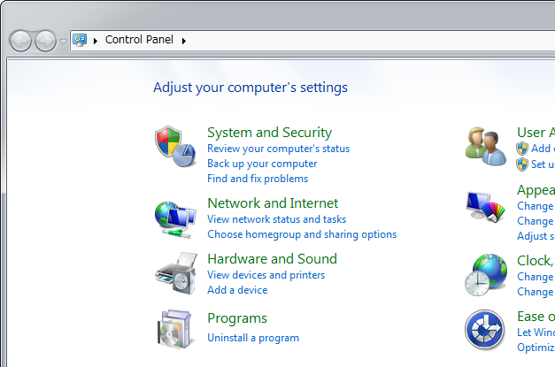
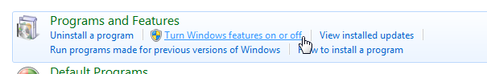
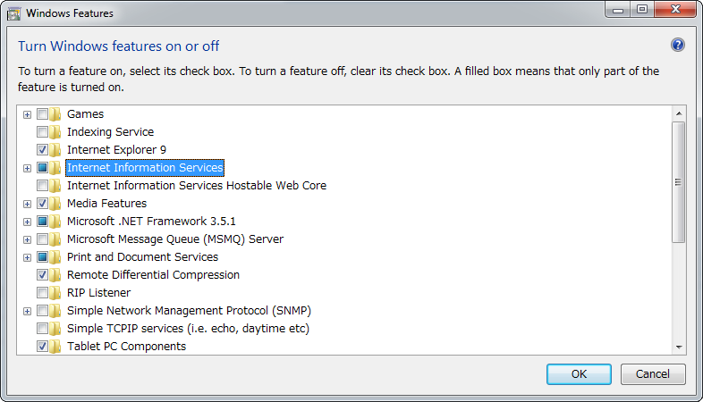
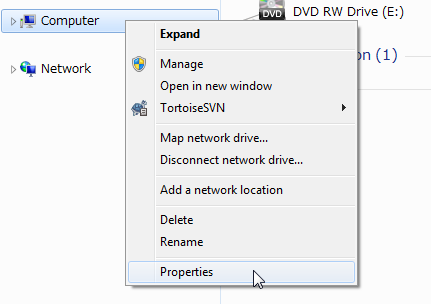
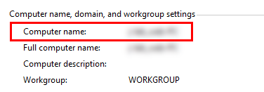
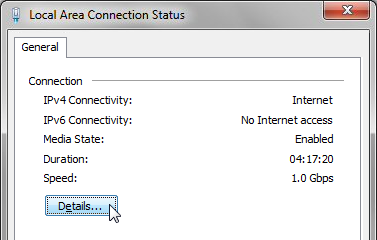
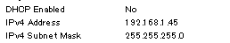
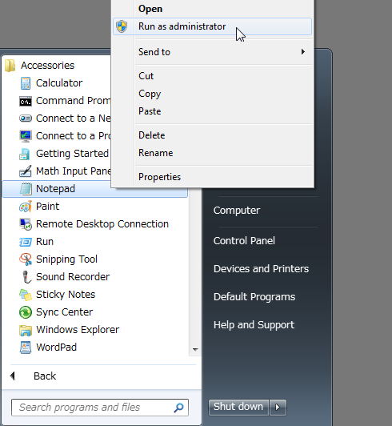

Local Server Setup
For reasons related to security, it is not possible to open the index.html file in the project folder by opening it directly in a browser.
You must set up a local server inside your computer. This section will explain how to do so.
Local Server Setup on Windows
Enabling Internet Information Service
- Click [Programs] in the [Control Panel].

- Click [Turn Windows features on or off].

- In the [Windows Features] window, click [Internet Information Services] to enable it.
*Not checked but filled in
- Click [OK].
Install Location of Files
A folder for a local server will be automatically created when Internet Information Services is enabled. Place the project folder inside this folder.
- Click [This PC] → [Local Disk C:].

- Open the "wwwroot" folder found in the "inetpub" folder.
- Place the project folder inside the "wwwroot" folder.
Accessing From Your Browser
- Open your browser.
- Confirm by entering the address below into the address bar.
http://<IP Address>/Project Folder Name/
or
http://<Computer Name>/Project Folder Name/
or
http://localhost/Project Folder Name/
Ex.) http://192.168.0.1/Project Folder Name/
Finding the Computer Name
- Open the applicable folder window, and right-click [This PC] in the sidebar and click [Properties].

- Find your computer's name next to [Computer name:] located under [Computer name, domain, and workgroup settings] section in the [System] window.

Finding Your IP Address
- Click [View network status and tasks] in the [Control Panel].

- Click [Connections: Local Area Connection] in the network connection status window.
- Click [Details] in the local area connection status window that appears.
 - The number found next to [IPv4 Address] is your IP address.

Setting up localhost
To access http://localhost/ in your browser, you need to configure the "hosts" file.
- Click the [Start] button, and go to [All Programs] → [Accessories]. Right-click [Notepad] and click [Run as Administrator].

- Go to [File] → [Open] in Notepad, and go to "C:\Windows\System32\drivers\etc". Select "All Files" and open the "hosts" file.

- Change the location below in the file and save the file.
■Before# 127.0.0.1 localhost
■After127.0.0.1 localhost
- Restart Windows.
Mac OSX Local Server Setup
Apache is installed by default on Macs. You can use a local server by running Apache.
Apache Basic Controls
Enter commands into the terminal, and run Apache.
Running Apache
$ sudo apachectl start
Quitting Apache
$ sudo apachectl stop
Install Location of Files
Place the project folder in the location below.
/Library/WebServer/Documents
* The project folder will be located in the location specified in [Location] when creating a new project and saving.
Accessing From Your Browser
- Open your browser.
- Confirm by entering the address below into the address bar.
http://localhost/Project Folder Name/